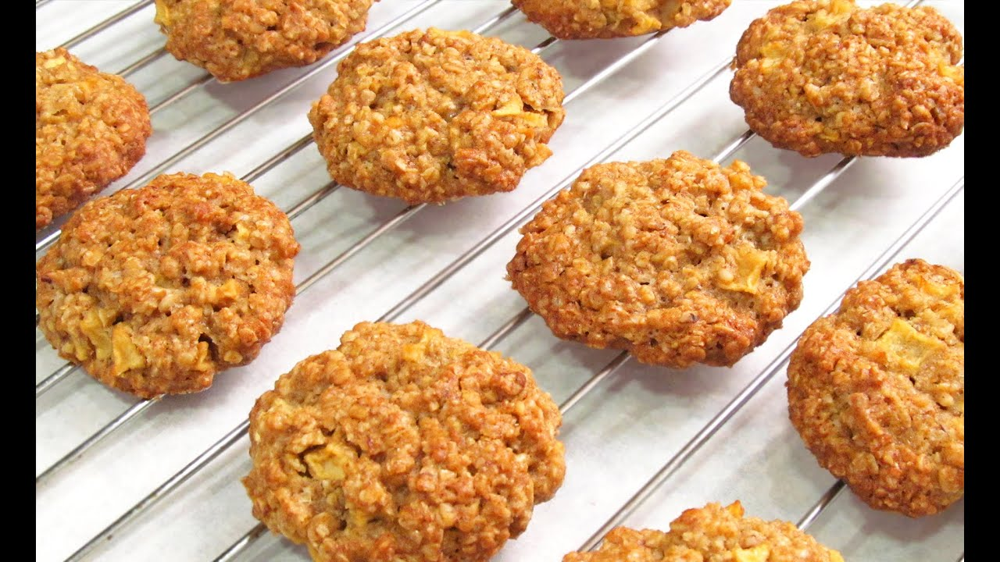

Las galletas de avena son un tipo de galleta elaborado en base a la harina de trigo mezclada con el cereal de
avena, tradicional en la repostería de varios países, dependiendo de sus variedades con otros ingredientes.
Con agua, la avena se prepara de forma similar a un té. Hierve el agua en una olla y agrega la cantidad de avena
que gustes. Deja que se deshaga y consúmela como una papilla de bebé. Ponle canela, azúcar vainillado o una
cucharadita de miel y las frutas que más te gusten.
Elegi este tema Galletas de avenas por que son muy saludables y mantienes fuerte y tambien en salud.

Ingredientes
1 huevo grande
100 gramos de copos de avena
50 gramos de mantequilla
50 gramos de harina. Puedes utilizar trigo o harina de avena.
40 gramos de azucar
1/2 cucharadita de levadura quimica o polvo de hornear.
1/4 cucharadita de sal
1/2 postre de canela
Preparacion
Corta la mantequilla en trozos grandes, ponla en un bol apto para microondas y con apenas unos segundos
en el microondas estará derretida (ve vigilándola y sácala cuando esté líquida o casi, ya que puede
llegar a explotar un poco y manchar tu microondas). Mézclala con la avena con ayuda de unas varillas,
procurando que la empape bien.
En otro bol casca el huevo, añade el azúcar y la sal y mézclalo todo con unas varillas hasta que el
aspecto sea bastante homogéneo. No es necesario batirlo, simplemente mezclarlo. Este es el momento de
echarle también la canela si te gusta.
Pon encima del bol un colador y echa encima la harina y la levadura. Coge el colador y ve moviéndolo y
haciéndolo chocar con tu mano para que caiga sin grumos ni apelmazamientos, es lo que se conoce como
tamizar. Mezcla bien con las varillas todos los ingredientes.
Ahora añade a este bol la avena que ya estaba mezclada con la mantequilla. Mézclalo todo bien y ya
tienes lista la masa para las galletas.
Tapa el bol con papel film y guárdalo en la nevera unos 15 minutos para que la masa esté más compacta y
sea un poco más sencillo darle forma a las galletas.
Precalienta el horno a 180ºC con calor arriba y abajo y ventilador mientras formas las galletas.
Ve cogiendo trozos de masa con una cuchara o un sacabolas de helado. En cualquier caso, ve dejando las
porciones separadas unas de otras lo suficiente como en la fotografía (porque luego se expanden un poco
en el horno) y sobre papel vegetal o un tapete de cocción (como el que utilizo yo).
Dale a los trozos una forma más o menos redondeada pero sin meter las manos, simplemente con una cuchara
o lengua de cocina. Recorta un cuadrado de papel vegetal, ponlo encima de cada bolita y aplasta con tu
mano, de esta forma quedarán planitas y no se te pegarán. Si los bordes han quedado irregulares siempre
puedes retocarlos un poco de nuevo con una cuchara o lengua de cocina. Ya ves que no quedan redondas
perfectas (no es la intención) pero sí con un bonito aspecto rústico y no tienes que tocarlas con las
manos para nada.
Pon el papel o el tapete sobre una rejilla de horno, introdúcela en el horno y hornea las galletas
durante unos 10 minutos, hasta que veas que se han dorado. A mi me han tardado exactamente 10 minutos
Sácalas del horno y déjalas enfriar sobre una rejilla para que no se humedezcan y queden crujientes